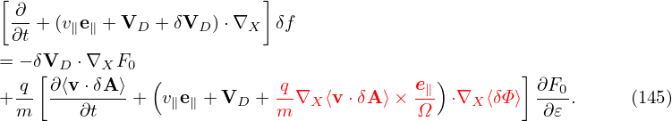
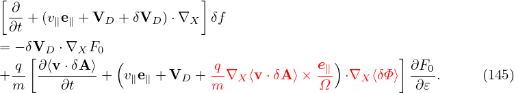

In the above, the perturbed part of the distribution function, δF, is split at least three times in order to (1) simplify the gyrokinetic equation by splitting out the adiabatic response and (2) eliminate the time derivatives, ∂δœï‚àï∂t and ∂δA‚àï∂t, on the right-hand. To avoid confusion, I summarize the split of the distribution function here. The total distribution function F is split as
|
| (145) |
where F0 is the equilibrium distribution function and δF is the perturbed part of the total distribution function. δF is further split as
 | (146) |
where δh satisÔ¨Åes the gyrokinetic equation (142) or (144). In Eq. (146), the red term gives rise to the so-called polarization density (discussed in Sec. 5.6). The analytic dependence of this term on δΦ is utilized in solving the Poisson equation. The blue term also has an analytic dependence on δA, which, however, will cause numerical problems in particle simulations (so-called ‚Äúcancellation problem‚Äù in gyrokinetic simulations) if it is utilized in solving the Ampere equation.
 ⟨v ⋅ δA‚ü©α
⟨v ⋅ δA‚ü©αConsider the approximation δA ≈ δA∥e∥, then the blue term in Eq. (146) is written as
 | (147) |
For electrons, the FLR effect can be neglected and then the above expression is written
 | (148) |
The zeroth order moment (number density) is then written as
 | (149) |
which is zero if F0 is Maxwellian. The parallel current is given by
 | (150) |
If F0 is a Maxwellian distribution, then